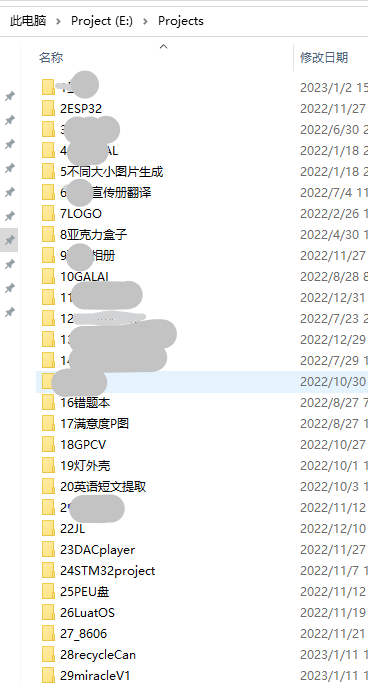
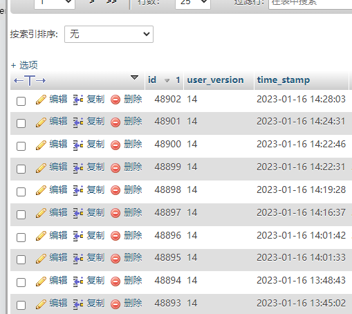
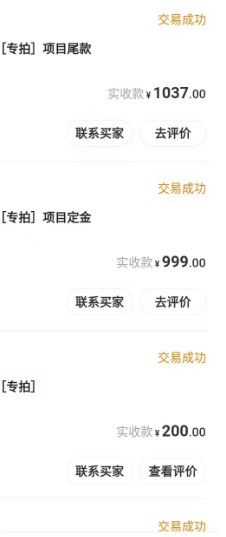

窝逝去的2022
本文最后更新于 2024年2月2日 晚上
看大佬都要写年终总结，这似乎价值不大的东西，但是还是要写一写。不能再寄下去了。
学业
不能多说还是蛮难受，寄又没完全寄。
今年前半年完全没有碰代码，后半年也很少，是摸鱼的一年呢。
虽然10月末开始网课直到现在，但是网课大部分科目也废了，项目也摸了。
项目
看我的项目目录其实一点也不空虚。30个项目呢，但是大多都中道崩殂了。
1.继续维护
我真的维护了吗……
服务器的转移是写后端的朋友整的，我似乎也就是一个月看一回有多少用户吧。
2.新的项目
基本是断断续续的，xx前几天又整了两天，然后继续躺平。学业的紧张让我无法再推进任何项目。
xx的初步解析已经基本完毕了其实。但是，躺。
3.ESP32的折腾
今年学了ESP-IDF啊，比arduino好用多了，看大佬们也是在表扬ESP-IDF。去年年末今年年初，做了一台简易的机器，有电子相册的功能，对接了QQ机器人（服务器端），实现了单片机QQ版本（服务器端是朋友做的），基本只有文字功能，称不上算是项目。arduino做的。界面太寄了。
今年11月用ESP-IDF重写了，顺便学了点LVGL，但是确实嵌入式很耽误时间，一个问题可以困扰人很长时间。说来哪个领域都是啊。。。
4.接了嵌入式外包
他自己也承认是层层外包。第一个人画了两张板子和300行代码挣了1K，第二个是个公司，1K代码和硬件的一些折腾，挣了2K。
最好的地方是，我现在也没什么花钱的地方，挣到了这个钱也就基本打消了我最近挣钱的念头，如果一直考虑钱的话，会很浪费时间。
第一个项目是ESP32，第二个项目是合宙物联网转STC单片机（我自己挑的）
所以，知识就是钱啊，我应该学习充盈自己而不是急于赚钱。
学习
学了一点点
ESP-IDF
LVGL
STC 51单片机
基本没学
基本是立项后就没下文了：
openCV
windows逆向
Unity
还真的只有这么多啊……
明年
立一些flag吧，在明年的总结中来检查
1.英语学习到学校前10%的水平
2.理科成绩维持前50
连目标都定不出来了啊
3.读25本书
4.字迹自己可以看的下去
5.坚持每天锻炼身体
编程方面……再坚持一段时间吧，寒假一周暑假两周而且不再有网课的未来，太难顶。